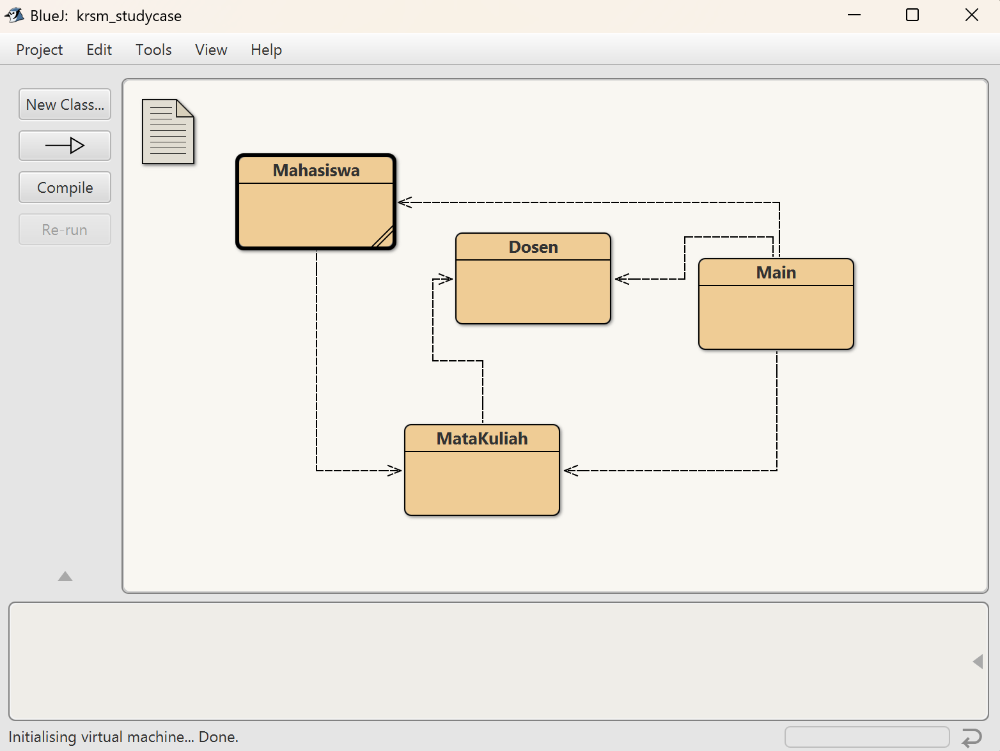

Kali ini saya diberikan tugas oleh pak fajar untuk membuat kode untuk Sistem KRSM dengan menggunakan bahasa Java.
-
pertama-tama saya membuat kode nya di bluej terlebih dahulu. yang tediri dari beberapa class
class dan kode kode yang saya buat akan saling terhubung
 -
berikut ini merupakan output dari kode saya. yang mana kita menginput nama dan NRP setelah itu akan muncul pilihan mata kuliah dan nama dosenya, setelah memilih dosen maka akan keluar output berupa print dari mata kuliah yang dipilih.

berikut ini merupakan link kode saya: